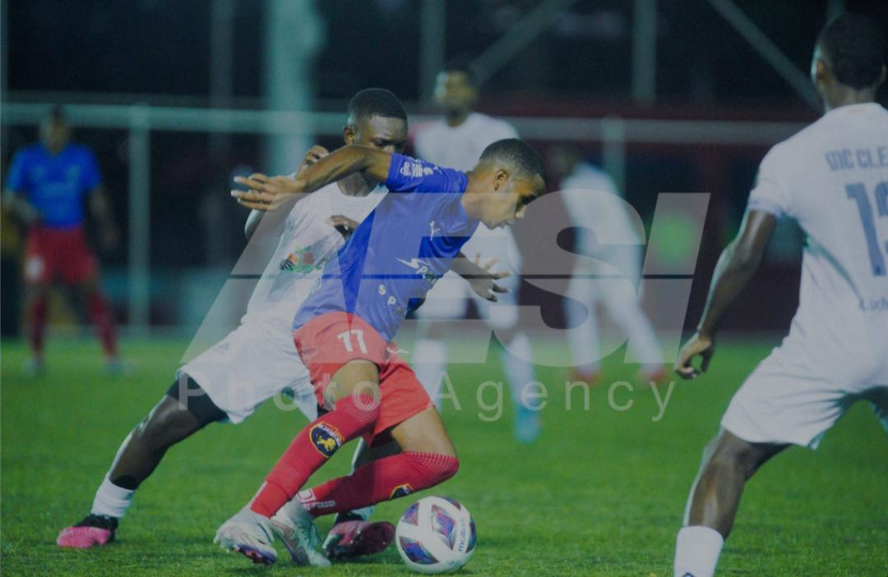
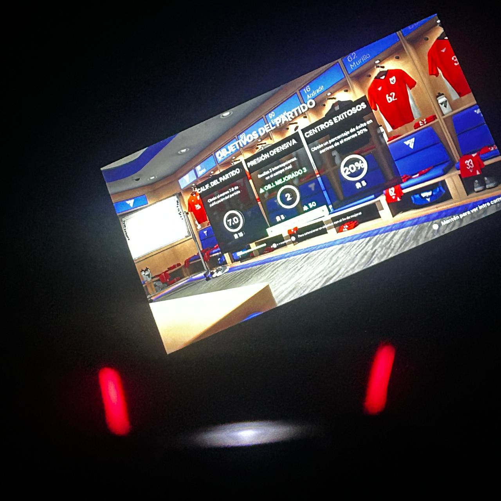

Sobre mí
Mi nombre es Emmanuel Hernandez. Soy estudiante de la carrera de Ingeniería de Software y me interesa seguir desarrollando mis conocimientos en el área de la tecnología.
Me considero una persona interesada en aprender nuevas herramientas y adquirir habilidades que me permitan crecer académica y profesionalmente.
Formación e intereses académicos
Actualmente estudio Ingeniería de Software. Me interesa ampliar mis conocimientos en programación, desarrollo web y nuevas tecnologías relacionadas con el desarrollo de sistemas y aplicaciones.
Hobbies e intereses personales
- Deportes
- Musica
- Videojuegos
Estas actividades forman parte de mi tiempo libre y me permiten disfrutar diferentes experiencias fuera del ámbito académico.
Metas futuras
Una de mis principales metas es graduarme y obtener mi título como Ingeniero de Software.
También deseo seguir desarrollando mis conocimientos y experiencia profesional para en el futuro poder crear y administrar mi propia empresa relacionada con el área de tecnología y desarrollo de software.
Mis intereses

